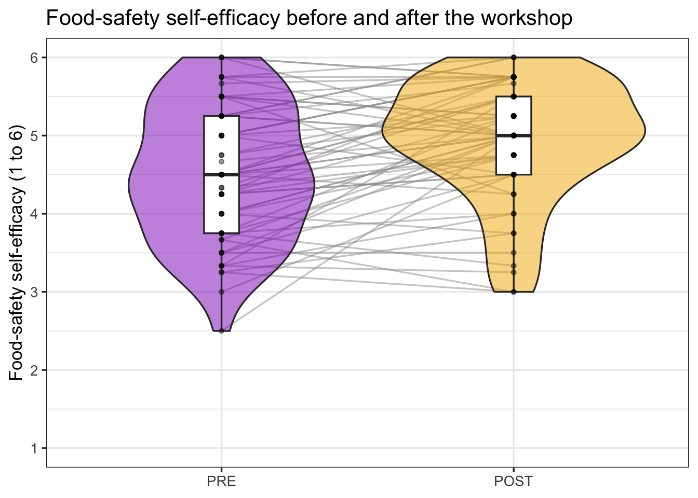
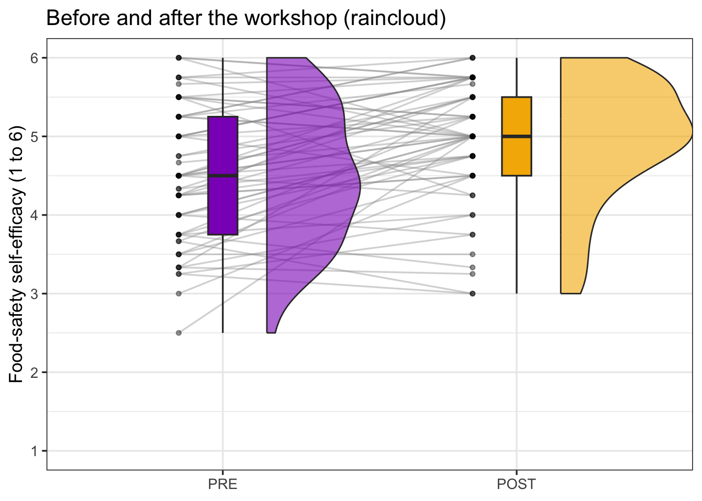

library(tidyverse) # dplyr, tidyr, ggplot2
library(readxl)
library(see) # geom_violinhalf() for the raincloud
library(knitr)19 Compare 1 Group, Pre/Post
The paired-samples t-test for normal data and the Wilcoxon signed-rank test for data that are not, with paired violin and raincloud plots
Abstract
This chapter is the Analysis Map’s “compare 1 group, pre/post” row: the same people measured twice, before and after something, and one continuous outcome. Researchers learn why a pre/post design is a one-group comparison of differences rather than a two-group comparison, how to link each person’s two scores and keep only the matched people, how to draw a paired violin or raincloud plot that shows every person’s change, how to check the assumption that the differences are roughly normal and then choose the paired-samples t-test or the Wilcoxon signed-rank test, and how to report each with an effect size. The Play uses the synthetic food security dataset from a cooking workshop; the Lab runs the same tests on the long-format lab dataset with Ref’s checks; Your Turn gives the template for Teams 3 and 5.
Keywords
paired t-test, Wilcoxon signed-rank, pre/post, violin plot, raincloud plot, within-person
Resources Ref’s kickoff: find the Ref before you code
Ref’s kickoff: find the Ref before you code
Ref’s kickoff: find the Ref before you code
Open Project → Open .qmd → Run load-library chunk → Run All Chunks Above → code. If anything looks wrong, use Ref’s Quick Checklist.
ResourcesResources: paired tests and paired plots
- Paired t-test in R (DataCamp; the paired section)
- Wilcoxon signed-rank test in R (STHDA)
- Raincloud plots with ggplot2 and
geom_paired_raincloud() see::geom_violinhalf()- Pre/Post Data: how to get from one or two survey exports to the wide and long tables this chapter needs
19.1 When is this the right test?
The same people answered the same questions twice: before and after a workshop, a video, a semester. On The Analysis Map that is the compare 1 group, pre/post row, and the test is the paired-samples t-test. The word paired is the whole idea: each person’s posttest score is paired with their own pretest score, so the thing being tested is the difference within each person, and the question is whether those differences average to something other than zero.
This is why it is a one-group comparison, not two. The pretest and posttest rows are not two groups of people; they are one group of people seen twice. Running an independent-samples test (Compare 2 Groups) on pre/post data is the most common wrong turn on the map: it throws away the pairing, and with it most of the power of the design. If you cannot link a person’s two rows, you cannot be on this row.
As in every box on the map, the shape of the outcome picks the test, but here the shape that matters is the shape of the differences:
| Test | Use it when | R function | Report |
|---|---|---|---|
| Paired-samples t-test (parametric) | the within-person differences are roughly normal, or there are 30 or more matched people | t.test(POST, PRE, paired = TRUE) |
M pre and post, t(df), p, Cohen’s dz |
| Wilcoxon signed-rank test (non-parametric) | the differences are skewed, few people are matched, or the outcome is a single rating with a few levels or a count | wilcox.test(POST, PRE, paired = TRUE) |
Mdn pre and post, V, p, r |
Play 1 is the parametric case; Play 2 is the non-parametric case.
GoGo: do this first
Pre/Post Data gets the data into shape: PASSWORD cleaned, duplicates removed, TIME as a factor, and one wide table (one row per person, SCORE_PRE and SCORE_POST) plus one long table (two rows per person). This chapter tests the wide table and plots the long one.
ImportantImportant: one package to install once
see is on the install.R list (R Packages). If library(see) says there is no package called 'see', source install.R again.
19.2 📋 The Play
ResourcesAbout the dataset:
foodsecurity_SYNTHETIC.xlsx
In fall 2025 an FRI Public Health team studied cooking skills and food security among Binghamton students: a pretest survey, a hands-on cooking workshop, and the same survey two weeks later, linked by a self-made PASSWORD. The file here is synthetic, generated by a seeded script, so it can be public. It keeps the real survey’s variables and response scales, the pretest means, the share of -99 and -50 codes, and the long pre/post layout; the real export had only 45 responses and almost no one could be linked from pretest to posttest, so the synthetic file has 72 pretest and 60 posttest rows with 59 people matched, a few dropouts, one duplicate, and two mistyped passwords, which is exactly the mess Pre/Post Data teaches you to clean. Compare 2 Groups uses the pretest rows of the same file.
The research question is the team’s: did cooking self-efficacy change from before the workshop to after it? Two outcomes, one for each line of the box: food-safety self-efficacy (EFF_SAFE, the mean of four 1-to-6 items), a composite; and the number of five basic cooking skills a person says they know (COOKKNOW, 0 to 5), a count.
19.2.1 Play 1: food-safety self-efficacy, before and after (paired-samples t-test)
Step 1: Import, clean the link, and score
food_long <- read_excel("data/foodsecurity_SYNTHETIC.xlsx") |>
mutate(PASSWORD = tolower(trimws(PASSWORD)), # the link must match exactly
TIME = factor(TIME, levels = c(0, 1), labels = c("PRE", "POST"))) |>
distinct(PASSWORD, TIME, .keep_all = TRUE) |> # one row per person per time
mutate(across(where(is.numeric), ~ replace(.x, .x %in% c(-99, -50), NA))) |>
mutate(EFF_SAFE = rowMeans(across(EFFSAFE1:EFFSAFE4), na.rm = TRUE),
COOKKNOW = rowSums(across(COOKKNOW1:COOKKNOW5))) # count of skills known (0 to 5)
food_long |> count(TIME)# A tibble: 2 × 2
TIME n
<fct> <int>
1 PRE 72
2 POST 60#source: Pre/Post Data (Situation 1); Create Composite Variables
#explanation: tolower() and trimws() fix the two most common password mismatches; distinct() drops the duplicate; the composites are scored in long format so pre and post are scored the same wayStep 2: Wide for the test, and keep the matched people
food_wide <- food_long |>
select(PASSWORD, TIME, EFF_SAFE, COOKKNOW) |>
pivot_wider(names_from = TIME, values_from = c(EFF_SAFE, COOKKNOW), names_glue = "{.value}_{TIME}")
nrow(food_wide) # people who appear at least once[1] 73food_matched <- food_wide |> filter(!is.na(EFF_SAFE_PRE), !is.na(EFF_SAFE_POST))
nrow(food_matched) # people with both scores: the n for the test[1] 59#source: Pre/Post Data (Situation 1, Step 4)
#explanation: names_glue builds EFF_SAFE_PRE / EFF_SAFE_POST; a paired test can only use people who have both
CautionCaution: your n is the matched people, not the rows
132 rows became 73 people, of whom 59 have both a pretest and a posttest. The test uses 59. Report all three numbers in Methods (how many started, how many finished, how many could be linked), because the people who dropped out may differ from the people who stayed.
Step 3: Look at the change, person by person
A paired plot should show the pairing. The long table of the matched people, with a line from each person’s pretest to their posttest, does that: the violins show the two distributions, and the lines show that most people moved up.
food_matched_long <- food_matched |>
select(PASSWORD, EFF_SAFE_PRE, EFF_SAFE_POST) |>
pivot_longer(cols = -PASSWORD, names_to = "TIME", values_to = "EFF_SAFE", names_prefix = "EFF_SAFE_") |>
mutate(TIME = factor(TIME, levels = c("PRE", "POST")))
plot_effsafe_paired <- ggplot(food_matched_long, aes(x = TIME, y = EFF_SAFE)) +
geom_line(aes(group = PASSWORD), color = "gray60", alpha = 0.5) + # one line per person
geom_violin(aes(fill = TIME), alpha = 0.5, show.legend = FALSE) +
geom_boxplot(width = 0.12, outlier.shape = NA) +
geom_point(alpha = 0.4, size = 1.2) +
scale_y_continuous(breaks = 1:6, limits = c(1, 6)) +
scale_fill_manual(values = c("PRE" = "#8d14c1", "POST" = "#f4b400")) +
labs(x = NULL, y = "Food-safety self-efficacy (1 to 6)",
title = "Food-safety self-efficacy before and after the workshop") +
theme_bw(base_size = 13)
plot_effsafe_paired
ggsave("plots/effsafe_prepost_paired.png", plot = plot_effsafe_paired, width = 7, height = 5, dpi = 300)
#source: https://ggplot2.tidyverse.org/reference/geom_path.html
#explanation: geom_line(aes(group = PASSWORD)) draws one segment per person, which is the layer that makes the plot paired; the other layers are the violin from Compare 2 Groups
GoGo: reading a paired violin
The violin is a box plot and a density curve in one shape: wide where many people scored, narrow where few did. Two violins side by side compare the two distributions, which is what Compare 2 Groups needs. For a pre/post design the lines matter more than the violins: if most lines go up, the change is consistent across people; if lines cross in every direction, the average change is hiding a lot of individual variation, and the test’s p-value will say so. (Erica Sava)
Step 4: The raincloud version
A raincloud puts the half-violin (the cloud), the box, and the raw points (the rain) side by side so that none hides another. The paired lines still connect each person.
plot_effsafe_rain <- ggplot(food_matched_long, aes(x = TIME, y = EFF_SAFE, fill = TIME)) +
geom_line(aes(group = PASSWORD), color = "gray60", alpha = 0.4, position = position_nudge(x = -0.15)) +
geom_violinhalf(alpha = 0.6, position = position_nudge(x = 0.15), show.legend = FALSE) +
geom_boxplot(width = 0.1, outlier.shape = NA, show.legend = FALSE) +
geom_point(alpha = 0.4, size = 1.2, position = position_nudge(x = -0.15), show.legend = FALSE) +
scale_y_continuous(breaks = 1:6, limits = c(1, 6)) +
scale_fill_manual(values = c("PRE" = "#8d14c1", "POST" = "#f4b400")) +
labs(x = NULL, y = "Food-safety self-efficacy (1 to 6)",
title = "Before and after the workshop (raincloud)") +
theme_bw(base_size = 13)
plot_effsafe_rain
ggsave("plots/effsafe_prepost_raincloud.png", plot = plot_effsafe_rain, width = 7, height = 5, dpi = 300)
#source: https://easystats.github.io/see/reference/geom_violinhalf.html
#explanation: position_nudge() moves each layer sideways so the cloud, the box, and the rain do not overlapStep 5: Check the assumption: are the differences normal?
The paired t-test does not care whether the pretest or the posttest scores are normal. It cares whether the differences are. Compute them and check.
food_matched <- food_matched |> mutate(EFF_SAFE_DIFF = EFF_SAFE_POST - EFF_SAFE_PRE)
food_matched |>
summarise(n = n(), mean_diff = mean(EFF_SAFE_DIFF), sd_diff = sd(EFF_SAFE_DIFF),
shapiro_p = shapiro.test(EFF_SAFE_DIFF)$p.value)# A tibble: 1 × 4
n mean_diff sd_diff shapiro_p
<int> <dbl> <dbl> <dbl>
1 59 0.431 0.743 0.593#explanation: post minus pre, so a positive difference is an increase; Shapiro-Wilk on the differences, not on the two columnsThe Shapiro-Wilk p-value is above .05 and there are 59 matched people, so the paired t-test is the right line of the box.
Step 6: The paired-samples t-test and its effect size
t_effsafe <- t.test(food_matched$EFF_SAFE_POST, food_matched$EFF_SAFE_PRE, paired = TRUE)
t_effsafe
Paired t-test
data: food_matched$EFF_SAFE_POST and food_matched$EFF_SAFE_PRE
t = 4.4518, df = 58, p-value = 3.929e-05
alternative hypothesis: true mean difference is not equal to 0
95 percent confidence interval:
0.2370887 0.6244932
sample estimates:
mean difference
0.430791 # effect size for a paired design: Cohen's d_z = mean difference / SD of the differences
dz_effsafe <- mean(food_matched$EFF_SAFE_DIFF) / sd(food_matched$EFF_SAFE_DIFF)
dz_effsafe[1] 0.5795737#source: https://www.datacamp.com/tutorial/t-tests-r-tutorial; Lakens (2013) for d_z
#explanation: paired = TRUE is what makes it a one-group test of the differences; post first so the mean difference is post minus pre; d_z: .2 small, .5 medium, .8 large
CautionCaution:
paired = TRUE is not optional
t.test(POST, PRE) without paired = TRUE runs the independent-samples test from Compare 2 Groups, treats the same 59 people as 118 different ones, and usually gives a larger p-value. The output’s first line tells you which test ran: Paired t-test is what you want to see.
Step 7: Report it
A paired sentence reports both means, the n of matched people, t(df), p, dz, and the direction:
Food-safety self-efficacy increased from before the workshop (M = 4.51, SD = 0.87) to two weeks after it (M = 4.94, SD = 0.77), paired t(58) = 4.45, p < .001, dz = 0.58, a medium effect (n = 59 matched participants; Figure 1).
19.2.2 Play 2: cooking skills known, before and after (Wilcoxon signed-rank test)
COOKKNOW is a count from 0 to 5, so the differences can only be whole numbers, most of them 0 or 1. That is not a normal distribution and never will be, so this is the non-parametric line of the box. The Wilcoxon signed-rank test ranks the sizes of the differences, keeps their signs, and asks whether the positive differences outweigh the negative ones. It is the Mann-Whitney U’s paired cousin.
Step 1: Look at the differences
food_matched <- food_matched |> mutate(COOKKNOW_DIFF = COOKKNOW_POST - COOKKNOW_PRE)
food_matched |> count(COOKKNOW_DIFF) # how many people changed by how much# A tibble: 6 × 2
COOKKNOW_DIFF n
<dbl> <int>
1 -2 1
2 -1 5
3 0 21
4 1 21
5 2 8
6 3 3food_matched |>
summarise(n = n(), median_pre = median(COOKKNOW_PRE), median_post = median(COOKKNOW_POST),
shapiro_p = shapiro.test(COOKKNOW_DIFF)$p.value)# A tibble: 1 × 4
n median_pre median_post shapiro_p
<int> <dbl> <dbl> <dbl>
1 59 4 5 0.000641#explanation: a count() of the differences is the best picture of a change in a count; Shapiro-Wilk far below .05 confirms what the count showsMost people gained one skill, a third stayed the same, a few lost one. Medians, not means, are the summary to report.
Step 2: The Wilcoxon signed-rank test and its effect size
w_cook <- wilcox.test(food_matched$COOKKNOW_POST, food_matched$COOKKNOW_PRE, paired = TRUE)
w_cook
Wilcoxon signed rank test with continuity correction
data: food_matched$COOKKNOW_POST and food_matched$COOKKNOW_PRE
V = 642.5, p-value = 4.037e-05
alternative hypothesis: true location shift is not equal to 0# effect size r from the normal approximation, as in Compare 2 Groups
n_changed <- sum(food_matched$COOKKNOW_DIFF != 0) # people with a zero difference are dropped by the test
z_cook <- qnorm(w_cook$p.value / 2)
r_cook <- abs(z_cook) / sqrt(n_changed)
r_cook[1] 0.665974#source: R documentation ?wilcox.test; Fritz, Morris, & Richler (2012) for r
#explanation: paired = TRUE makes it the signed-rank test (statistic V), not the rank-sum test (W); r = |Z| / sqrt(n), using the n the test used; .1 small, .3 medium, .5 largeTwo things to know about the output. With paired = TRUE the statistic is V, and R’s warnings about ties and zeroes are expected with a count: people whose difference is exactly 0 carry no information about direction, so the test sets them aside, which is why r uses the number of people who changed. And the first line of the output, Wilcoxon signed rank test, is how you confirm the paired version ran.
Step 3: Report it
The number of basic cooking skills participants said they knew increased from before the workshop (Mdn = 4 of 5) to after it (Mdn = 5), Wilcoxon signed-rank V = 642.5, p < .001, r = 0.67, a large effect; 32 of 59 matched participants gained at least one skill, 21 reported no change, and 6 reported fewer.
CautionCaution: a change is not an effect of the workshop
Both results say that scores went up between the two surveys. They do not say the workshop caused it: the same people might have gained confidence from two more weeks of cooking for themselves, or the people who came back may be the ones who liked the workshop. Write “increased from pretest to posttest”, not “the workshop improved”. A control group would be needed to say more, and your Discussion should say so.
19.3 🏈 The Lab
Ref’s kickoff. The lab survey was given twice, six weeks apart, and exported once as ANTH306_LayConceptionsMH_SYNTHETIC_LONG.xlsx, the file you cleaned in Pre/Post Data. It has the eight stigma items and one help-seeking question (HELPSEEK, 1 to 5) at both times. Two questions, one for each line of the box: did stigma (the 8-item composite STIGMA) change? Did willingness to seek help (HELPSEEK, a single rating) change? Run each the way the Play did, then open my check.
Before you start. The file is in the class Google Drive, next to the lab data; put it in your data folder. Clean it as in Pre/Post Data (lowercase and trim PASSWORD, TIME as a factor, distinct(), -99/-50 to NA), then score STIGMA in long format exactly as lab_prep.R does (reverse the four _R items with 6 - x, then the mean of all eight). Pivot STIGMA and HELPSEEK wide together.
19.3.1 Lab Play 1: Stigma before and after (paired t-test)
Keep the people with both stigma scores, draw the paired violin, compute the differences, check their shape, run the paired t-test and dz.
Go Ref’s check: what should you find?
Ref’s check: what should you find?
- 323 rows after
distinct(), 202 people, 121 matched onSTIGMA. - Means: pre 2.44, post 2.12; mean difference -0.32 (SD 0.53), Shapiro-Wilk p = 0.322.
- Paired t(120) = -6.59, p < .001, dz = -0.60. Stigma went down: a negative difference and a negative t mean post is lower than pre.
19.3.2 Lab Play 2: Help-seeking before and after (Wilcoxon signed-rank)
HELPSEEK is one 1-to-5 question. Keep the people with both answers, count() the differences, run the Wilcoxon signed-rank test and r.
Go Ref’s check: what should you find?
Ref’s check: what should you find?
- 114 matched on
HELPSEEK(fewer than onSTIGMA: some people skipped the question at one time). - Differences: 11 went down, 65 no change, 38 went up. Medians: pre 4, post 4. The medians are the same, and the test is still significant: a signed-rank test is about the differences, and 38 up against 11 down is lopsided. Report the counts of up / same / down alongside the medians.
- Wilcoxon signed-rank V = 950, p < .001, r = 0.55 (using the 49 people who changed).
Caution Ref’s call: fouls to check if your numbers do not match
Ref’s call: fouls to check if your numbers do not match
Ref’s call: fouls to check if your numbers do not match
- Fewer matched people than Ref →
PASSWORDwas not lowercased and trimmed before the pivot, so one person became two. pivot_wider()complains about values not being uniquely identified → the duplicate row is still there.distinct(PASSWORD, TIME, .keep_all = TRUE)first.- Your t has the opposite sign → you put
PREfirst. The order ist.test(POST, PRE, paired = TRUE)so that the difference is post minus pre. - The output says Welch Two Sample t-test →
paired = TRUEis missing. - Your stigma mean is different → the
_Ritems were not reversed, or6 - xwas applied to the wrong items. Compare withlab_prep.R. - Your r is a little different → you divided by all matched people instead of the people whose difference is not 0.
ImportantRequired: a pre/post comparison in your report (Teams 3 and 5)
For every pre/post comparison in your RD Report and Final Report: the three n’s (started, finished, matched) in Methods; the paired violin or raincloud with lines per person, saved with ggsave() and captioned with the matched n; the check on the differences and what it showed; the test that matches the outcome, the paired t-test with dz for a composite whose differences are roughly normal (Play 1, Step 7) or the Wilcoxon signed-rank test with r for a count, a single rating, or skewed differences (Play 2, Step 3); and one sentence in Results in that Play’s form, written as “increased/decreased from pretest to posttest”, not as an effect of the program.
19.4 🏆 Your Turn
library(tidyverse); library(see)
# 1. matched people only (wide_data from Pre/Post Data has SCORE_PRE and SCORE_POST)
matched <- wide_data |>
filter(!is.na(SCORE_PRE), !is.na(SCORE_POST)) |> # REPLACE SCORE with your composite or outcome
mutate(DIFF = SCORE_POST - SCORE_PRE)
nrow(matched) # the n for the test; report started / finished / matched
# 2. look: paired violin with one line per person
matched |> select(PASSWORD, SCORE_PRE, SCORE_POST) |>
pivot_longer(-PASSWORD, names_to = "TIME", values_to = "SCORE", names_prefix = "SCORE_") |>
mutate(TIME = factor(TIME, levels = c("PRE", "POST"))) |>
ggplot(aes(x = TIME, y = SCORE)) +
geom_line(aes(group = PASSWORD), color = "gray60", alpha = 0.4) +
geom_violin(aes(fill = TIME), alpha = 0.5, show.legend = FALSE) +
geom_boxplot(width = 0.12, outlier.shape = NA) +
labs(x = NULL, y = "REPLACE: outcome (scale)", title = "REPLACE") + theme_bw()
# ggsave("plots/score_prepost.png", width = 7, height = 5, dpi = 300) # REPLACE the name
# 3. the differences
matched |> summarise(n = n(), mean_diff = mean(DIFF), sd_diff = sd(DIFF), shapiro_p = shapiro.test(DIFF)$p.value)
matched |> count(DIFF) # for a count or a single rating
# 4a. differences roughly normal (parametric): paired t-test and d_z
t.test(matched$SCORE_POST, matched$SCORE_PRE, paired = TRUE)
mean(matched$DIFF) / sd(matched$DIFF) # d_z: .2 small, .5 medium, .8 large
# 4b. differences not normal, a count, or a single rating (non-parametric): Wilcoxon signed-rank and r
w <- wilcox.test(matched$SCORE_POST, matched$SCORE_PRE, paired = TRUE)
w
abs(qnorm(w$p.value / 2)) / sqrt(sum(matched$DIFF != 0)) # r: .1 small, .3 medium, .5 large| Criteria | Ask yourself |
|---|---|
| Design | Are these the same people measured twice, linked by PASSWORD? (Different people in two groups is Compare 2 Groups.) |
| Matched n | Did you report how many started, how many finished, and how many were matched, and run the test on the matched people only? |
| Which test | Did you check the shape of the differences and say which line of the Analysis Map box you are on: paired t-test (composite, normal differences) or Wilcoxon signed-rank (count, single rating, or skewed differences)? |
| Paired | Does the output’s first line say Paired t-test or Wilcoxon signed rank test? |
| Effect size | Did you report dz (paired t-test) or r (signed-rank), and say whether it is small, medium, or large? |
| Plot | Does the plot show one line per person, and does the caption give the matched n? |
| Sentence | Does your Results sentence have both means (or medians), the matched n, the statistic, p, the effect size, and say “increased” or “decreased from pretest to posttest”? |
| Claim | Does Discussion say the change cannot be attributed to the program without a control group? |
Resources Ref’s final whistle: before you quit RStudio
Ref’s final whistle: before you quit RStudio
Save → Render → Back up to ELN → Quit, Don’t Save workspace. Details: Ref’s Quick Checklist.